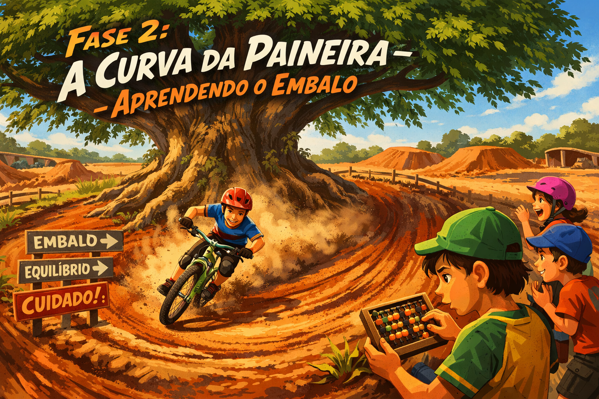

A Paineira exigia embalo: velocidade acumulada antes da curva. Aqui você aprende Pygame — e o jogo Pong nasce na pista.

RectNa pista de Palotina, a Paineira era a curva mais temida. Para virá-la sem cair, o piloto precisava de embalo: velocidade acumulada metros antes. No Pygame, o embalo é o loop principal — ele roda 60 vezes por segundo, acumulando frames, atualizando posições e redesenhando a tela.
Cada frame é uma pedalada. O loop não para enquanto o jogo estiver rodando —
assim como o piloto não para de pedalar enquanto está no circuito.
clock.tick(60) = 60 pedaladas por segundo.
A bola rebate nas paredes e nas raquetes. A fÃsica é simples: quando a bola toca uma borda, o sinal da velocidade se inverte. Isso é a programação da curva da Paineira: o piloto dobra a direção.
Crie o jogo Pong da Pista completo: duas raquetes, uma bola, placar,
rebatimento nas paredes e detecção de ponto. Use as cores do Circuito Ferradura:
verde-pista #1a7a3c e amarelo-palotina #f4c430.